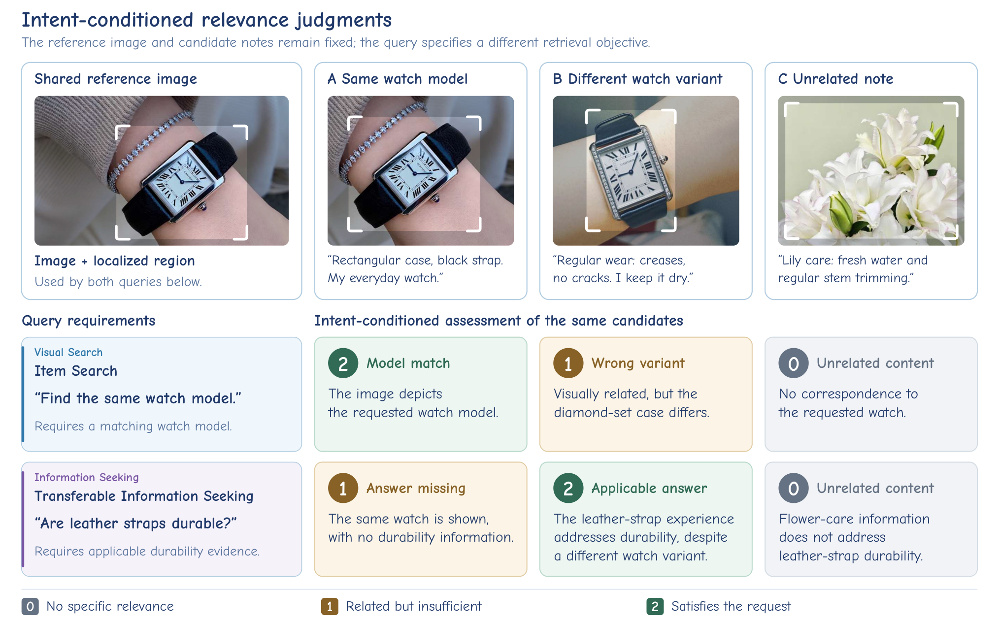
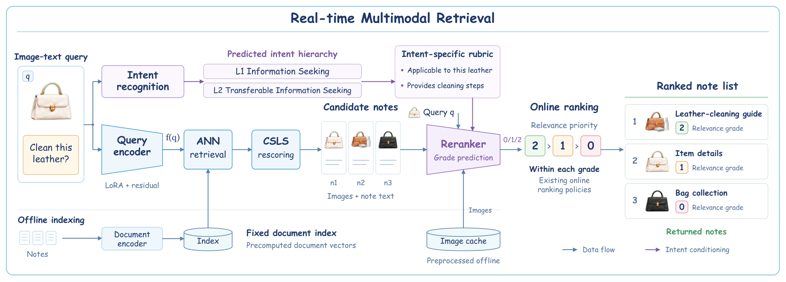
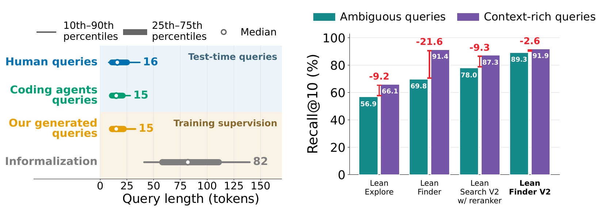
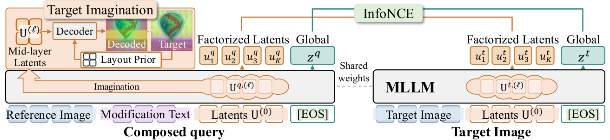

Contents · 5 sections
1The same image, different evidence2Walkthrough: one watch, two questions3After the relevance rules change, how much does recall move?4What this means for people who build community image-text search5LimitationsSHARE
The same white T-shirt, three asks — find this item, see outfits, or ask how to wash it — and the notes you need are completely different: IntentFlow
You take a photo of a white T-shirt on Xiaohongshu. The same image can be followed by three requests: help me find one like this, show me how to style it, and how should I wash this.
For item search, you want notes about that same white T-shirt, or the specified model. Looking similar is not enough. For outfits, you want examples where this T-shirt is already worn as part of a look. For washing advice, you want care instructions that apply to this fabric. The photo in the note can show a different garment, as long as the material and care conditions still apply.

This paper is from Xiaohongshu Inc. It builds real-time search for a community of notes, where a query is one reference image plus a short text request. The same retrieval also supplies evidence to a multimodal search agent that uses retrieval as a tool. The existing production system first retrieves candidates by image, then reranks the results. Notes that look similar may not carry the evidence that sentence is asking for. If a useful note never enters the candidate set, later reranking cannot surface it. IntentFlow first recognizes the query's hierarchical intent, then uses each intent's own relevance criteria to build training data, learn retrieval vectors, and rerank with three relevance grades. The system runs over an index on the order of ten billion entries. In a user-level comparison against the previous production system of visual retrieval followed by reranking, Top-4 query click-through rate rose 28.17% relatively, query click-through rate (QCTR) rose 18.96% relatively, and average time spent on the results page rose 12.56% relatively. Top-4 query click-through rate is the fraction of issued queries in which at least one of the first four results is clicked. Query click-through rate does not restrict the click position. The monitored end-to-end P50 latency is 1.07 seconds.
The full system applies the same intent criteria to both retrieval and reranking, and all three online engagement metrics are higher than the configuration that only adds intent-conditioned reranking. On Transferable Information Seeking, intent-aware supervision raised coverage, but the first-result hit rate fell from 65.30% to 58.46%.
The same image, different evidence
IntentFlow layers intent by what result you want, not by what object is in the image. The first level splits actionable requests into two groups. Visual Search: the candidate image itself provides the requested result, such as an item, an original image, or an outfit. Information Seeking: the note text must also give an answer or actionable guidance. There is also Unclear Intent, used only when the image and text together still fail to establish a retrieval objective.
The second level writes the objective more precisely. Item Search wants the item named by the query, or a similar item or substitute the query allows. If the ask is for the exact same item, being in the same category or merely looking similar does not count as a hit. Outfit Styling needs to show a combination. For Target-Specific Information Seeking, care instructions must apply to the flower in the image. Transferable Information Seeking allows the answer to come from a different item, as long as the conditions of use still apply: when the question is whether a leather strap is durable, wearing experience with leather on a different watch can be shared.
Relevance is marked in three grades. Grade 0 means there is no specific correspondence. Grade 1 means there is a relation, but a condition required to satisfy the request is missing. Grade 2 means the note provides the requested result and meets the correspondences and constraints in the query. The meaning of the grades is the same for every intent. What counts as satisfying the request changes with the intent.
Walkthrough: one watch, two questions
The next example comes from the paper's Figure 3. The note excerpts in the figure are illustrative. The relevance grades for the three candidates are the paper's own judgments.
The shared reference image is a square-case watch with a black leather strap. Candidate A is the same model, and its text describes only appearance. Candidate B is a different diamond-set model; its text says daily wear produces creases but no cracks, and the strap stays dry. Candidate C is lily-care advice, unrelated to the watch.
First, judge the intent. "Find the same watch model" is Item Search under Visual Search; the hard requirement is that the model must match. "Are leather straps durable?" is Transferable Information Seeking under Information Seeking; the hard requirement is usable durability information. Query encoding and intent recognition run at the same time. Neither waits for the other.
Second, score the three notes under that intent. For Item Search, A matches the model and gets grade 2. B looks similar, but the case is set with diamonds, so it gets grade 1. C gets grade 0. The order is A above B, and B above C.
Third, switch the question to durability. The three notes stay the same, but the grades flip. A is the same model, but it does not discuss durability, so it drops from 2 to 1. B is not the same model, but the leather-wearing experience answers the question, so it rises from 1 to 2. C remains 0. The order becomes B above A, and A above C. If you look only at appearance, A would stay ahead of B. Under the current question, that order is wrong.

Fourth, the online reranker receives the two-level intent from the recognizer, predicts the three relevance grades under the matching criteria, and ranks "satisfies the request" ahead of "related but not enough," and the latter ahead of irrelevant. Within the same grade, it keeps the existing production ranking policy. For the durability question, B must be ranked above A, because B is now the note that satisfies the request.
Fifth, this requirement reaches back to retrieval. If the candidate set is still built by appearance, notes like B — they do not look similar, but the text is useful — never reach the reranker, and the later grade ordering cannot help. So retrieval vectors must be learned under the same criteria: positives are grade 2 notes that truly satisfy the request; hard negatives look very similar but fail a decisive condition, such as a single garment with no outfit combination, or the right product with no price quote. The query vector and the document vector are each composed from the designated region, the whole-image context, and the text. At serving time, the recognized intent does not enter the encoder; it is sent only to the later reranker. Query encoding and intent recognition run concurrently. Candidate B's durability remarks are written in the note text, so they enter the document vector, and retrieval then has a chance to surface B.
Intent recognition is a 0.8B generative model that outputs only the two-level intent labels. On 390 human-annotated queries, second-level accuracy is 91.54%, close to the teacher's 91.79%, which shows that this compact model is already usable online. The reranker is also a 0.8B model. It takes the query, the candidate, and the intent, and outputs only the grade.

In training, these three grades also become ranking supervision. The gain is computed as 2 to the power of r, minus 1: grade 2 gives 3, grade 1 gives 1, and grade 0 gives 0. The gain gap between grades 2 and 1 is therefore 2, and the gap between grades 1 and 0 is 1. When the position discount and the score gap are the same, the pair that puts a fully answering note ahead of a merely related one incurs twice the weighted loss of the latter pair. This loss pushes grade 2 notes further up the list.
After the relevance rules change, how much does recall move?
In the offline comparison, the generic matching rules and the intent-specific rules share the same data source, candidate acquisition process, data volume, and training setup. Only the relevance rules used to construct positives and hard negatives are changed. Evaluation counts only grade 2 notes as hits. There are 20,000 test queries, against two candidate galleries of 512,655 and 1,904,054 notes.
On the 1.9 million-note gallery, overall Hit@1, the rate at which the top result is a hit, rises from 45.51% to 66.09%, a gap of 20.58 percentage points. Item Search rises from 16.25% to 59.09%, and Outfit Styling from 2.49% to 40.21%. These two request types depend on whether the model matches and whether a styling relation is present. The generic "looks similar" rule is the most likely to mix positives with hard negatives, so the lift after changing the rules is also the largest.
| Intent | Generic-rule Hit@1 | Intent-rule Hit@1 | Difference (pp) |
|---|---|---|---|
| Item Search | 16.25% | 59.09% | +42.84 |
| Outfit Styling | 2.49% | 40.21% | +37.72 |
| Target-Specific Information Seeking | 44.65% | 70.65% | +26.00 |
| Transferable Information Seeking | 65.30% | 58.46% | -6.84 |
| Overall | 45.51% | 66.09% | +20.58 |
(Numbers are from paper Table 4, on the 1.9M gallery. The metric is first-result hit rate, Hit@1.)
For Target-Specific Information Seeking, Recall@100 rises from 52.77% to 85.61%. But does changing the rules necessarily make the first result more accurate? For Transferable Information Seeking, Recall@100 rises from 66.24% to 85.97%, yet Hit@1 falls from 65.30% to 58.46%. This shows that the intent-specific rules can bring usable guidance into the list, but they have not yet reliably placed the note you most need to see in first position. What this comparison can prove is that, when other conditions are aligned, the relevance rules themselves change recall. It cannot prove that Hit@1 improves for every intent, and it cannot directly explain why online clicks rose, because the online comparison is against the original visual retrieval plus reranking, and that control does not include this generic-rule model.
Graded ranking and distillation push Hit@1 on the 1.9 million gallery from 66.09% to 67.70%. Query-side adaptation, without recomputing document vectors, then pushes Hit@1 to 68.54%. CSLS (a method from cross-lingual word-vector alignment that rescores by local neighborhood density; here it corrects candidate scores) then corrects the scores to 68.84%. These increments appear when Hit@100 under the intent-specific rules is already 98.57%, which shows that the later steps improve head ranking after the right notes are already retrievable.
Online there are two cumulative configurations, both compared with the same production control of image-based retrieval followed by reranking. With only intent recognition and intent-conditioned reranking added, Top-4 query click-through rate rises 21.65% relatively, query click-through rate rises 15.12% relatively, and average time spent rises 9.66% relatively. After multimodal retrieval is also added, the three figures become 28.17%, 18.96%, and 12.56%. All three rise together, which shows that applying the intent criteria to both retrieval and reranking also lifts online engagement.
| Configuration | Top-4 query click-through rate | Query click-through rate | Average time spent on the results page |
|---|---|---|---|
| Intent recognition + intent-conditioned reranking | +21.65% | +15.12% | +9.66% |
| Plus multimodal retrieval (IntentFlow) | +28.17% | +18.96% | +12.56% |
(Numbers are from paper Table 1. All figures are percentage changes relative to the same production control.)
What this means for people who build community image-text search
If the same image is paired with different questions, but your relevance labels stay fixed, positives from "find this item" will contaminate training for "how do I care for this."
First write down what counts as satisfying each type of request, then apply that standard to both retrieval supervision and reranking. A useful check is to keep the reference image and the candidate set fixed, change only that sentence, and see whether the positive switches. If the reranker only consumes candidates from visual retrieval, notes like Candidate B — they do not look similar, but the text is useful — will never be ranked.
When the index has to be iterated, IntentFlow keeps the document vectors fixed and adapts only the query side. On the 1.9 million gallery, this step raises Hit@1 from 67.70% to 68.54%, at a lower cost than recomputing the whole index.
Limitations
Of the intent recognizer's 33 second-level errors, 15 fall on the boundary between "must be about the target in the image" and "transfer is allowed." Both types are looking for textual information; the only difference is whether the answer must concern the designated object. On 5,977 query-candidate pairs, the reranker's three-grade accuracy is 73.05%, so 26.95% are still assigned the wrong grade, which shows that the three-way decision still has a clear error rate. Offline retrieval evaluation uses galleries of 0.5 million and 1.9 million candidates, while the online index is on the order of ten billion entries. The online report gives click-through rate and time spent relative to the production control; it does not report offline relevance metrics themselves.
How did this read for you?
Hoot made a note. Thanks for the feedback.
One tap, no sign-in; tap again to undo. Only anonymous counts are kept, never who you are.
Related papersMore from Paper Daily
 Retrieval · 2026-11-19MIPR: A Benchmark for Reasoning-Intensive Multimodal Intent-to-Product Retrieval with Multi-Category SolutionsReal e-commerce queries often state an intent without naming a product, and the same intent may be fulfilled by items from several categories, yet most multimodal retrieval benchmarks assume a fairly well-defined target. A new intent-to-product benchmark provides 3,522 multimodal queries and a shared corpus of 30,731 products, with reasoning-intensive retrieval, multi-category solutions, and fine…
Retrieval · 2026-11-19MIPR: A Benchmark for Reasoning-Intensive Multimodal Intent-to-Product Retrieval with Multi-Category SolutionsReal e-commerce queries often state an intent without naming a product, and the same intent may be fulfilled by items from several categories, yet most multimodal retrieval benchmarks assume a fairly well-defined target. A new intent-to-product benchmark provides 3,522 multimodal queries and a shared corpus of 30,731 products, with reasoning-intensive retrieval, multi-category solutions, and fine…
Retrieval · 2026-10-24Lean Finder V2: Semantic Search for Mathlib That Disambiguates User QueriesPeople writing proofs and coding agents alike must first find suitable theorems in Mathlib, the mathematics library of the Lean proof assistant. Real search queries are short, they leave out much of the intent, and the same phrase may correspond to several similar theorems. Lean Finder V2 tackles the problem from both ends. On the model side, the authors use reinforcement learning to train a quer…
Retrieval · 2026-11-05Factorized MLLM Embeddings for Composed Image RetrievalIn composed image retrieval, having a multimodal LLM first represent the edited image in a few parts and then gather them into the retrieval vector works better. The task gives a reference image plus a request, such as turning a shirt into a red long-sleeved one, and asks for the image after the change. The usual approach squeezes the reference image and the request into one embedding with a cont…
Discussion
Add experiment details, reproduction notes or a different take. Requires a GitHub sign-in.
Loading the discussion…